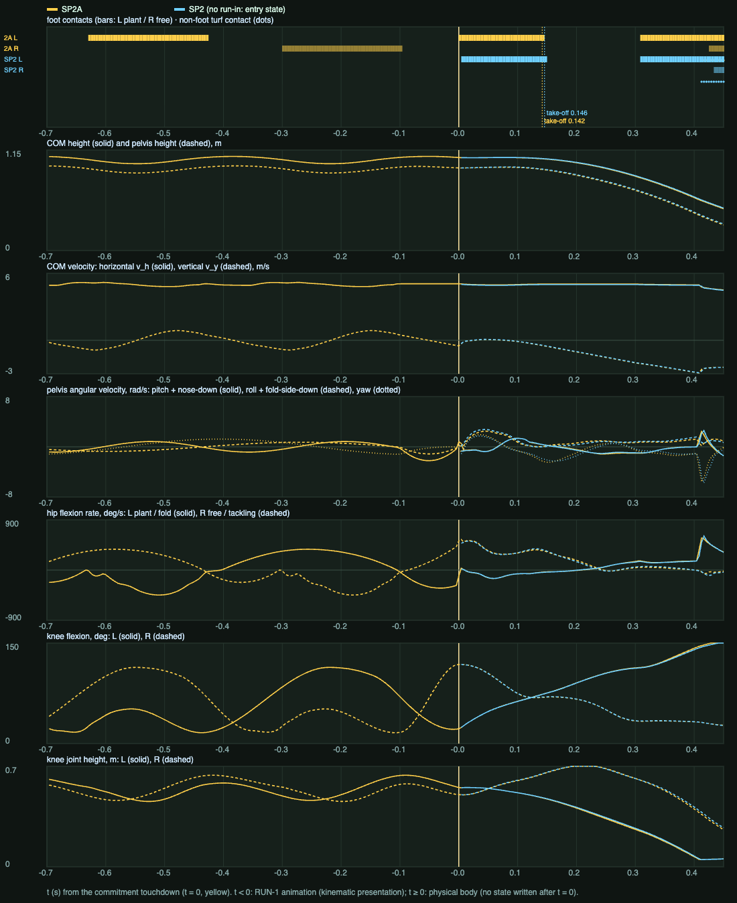

SLIDE-PHYS-2A: authored dive and tuck on the rigid body, and the RUN → DIVE start transition
14 Oct 2026 · candidate evidence/SP2A_opts.json · report SP2A_REPORT.md · log SP2A_LOG.md · reference analysis REFERENCE_SP2A_ANALYSIS.md
Not met: the knee still carries 50% of the glide; the fold hip overruns its stop by 3° for about 1 s (SP2: 8°); the tackling ankle overruns 2.5° for 29 ms when it lands; the 3D tuck is reached during the slide rather than at ground entry; and at 4.5 m/s the body rolls onto its front at the end. I have stopped for your visual review. Nothing has been started on the running recipient.
1. SP2A (5.0 m/s run-in)
t < 0: RUN-1 run-in, then the authored final flight (kinematic; the HUD says which). t ≥ 0: physics. Dots mark turf contacts (yellow boots, red body, blue arms). At 0.25× the panels are rear 3/4 colliders, rear 3/4 and front 3/4.
2. START-TRANSITION: SP2 | SP2A (final two running steps → commitment → take-off → about 200 ms airborne)
0.25×: SP2 side | SP2A side | SP2A rear 3/4 colliders + skeleton + intent.
Reference f80 (its last support) aligned with the sim plant touchdown t = 0; 60 fps taken as real time. The reference's dive runs about 0.1 s ahead after t = 0.
Contains third-party reference footage: kept outside Git in review/local_reference/; it plays only on the machine that built it (render/sp2a_compose_reference.sh).
Boundary check: joint angular acceleration within ±3 frames of the toe-off is 646,439 °/s², and of the touchdown 187,084 °/s². The run's own peak over its last stride is 646,439 °/s². Airborne after the physical push-off: 37 steps, mean COM a_y -9.81 m/s², horizontal 0. Take-off 0.142 s, first body contact 0.412 s.

3. REFERENCE | SP2 | SP2A (ground entry and slide)
From the plant touchdown. 0.25×: rear 3/4 and side of each.
Aligned at the plant touchdown (reference real −0.12 s before the trailing shin touchdown).
Contains third-party reference footage: kept outside Git in review/local_reference/; it plays only on the machine that built it (render/sp2a_compose_reference.sh).
4. Measures per run-in speed
| speed m/s | hash | first contacts (s) | glide share: knee / shin / thigh / pelvis / tackling boot | slide m | joint-limit overruns ≥ 1° | min belly-y (face-down < −0.5) | momentum residual (step ≥ 1) |
|---|---|---|---|---|---|---|---|
| 4.499 | a0414e08d1156c5c | thigh_L 0.433 → foot_R 0.458 → shank_L 0.471 → pelvis 0.496 | 0.65 / 0.02 / 0.00 / 0.19 / 0.13 | 0.98 | hip_L.x 1.8° / 546 ms elbow_L.y 1.3° / 13 ms | -0.60 head 1.55 s | 3.8e-4 N·s |
| 4.999 | 3062e3e24694aaf0 | thigh_L 0.412 → foot_R 0.425 → shank_L 0.479 → pelvis 0.504 | 0.50 / 0.03 / 0.13 / 0.17 / 0.16 | 1.35 | hip_L.x 3° / 1050 ms ankle_R.z 2.5° / 29 ms elbow_L.y 1.5° / 13 ms | -0.23 | 4.2e-4 N·s |
| 5.499 | 8f286fcddd07e035 | thigh_L 0.392 → foot_R 0.392 → shank_L 0.521 → pelvis 1.804 | 0.39 / 0.14 / 0.13 / 0.00 / 0.13 | 1.88 | hip_L.x 5.1° / 83 ms ankle_R.z 2.1° / 112 ms elbow_L.y 1.6° / 13 ms lumbar.x 1.1° / 21 ms | -0.11 | 3.5e-4 N·s |
Determinism at 4.999: 3062e3e24694aaf0 = 3062e3e24694aaf0 (identical). Fold-leg geometry at the first body contact (5.0 m/s): knee 146°, hip flexion 43° / abduction 12° / rotation -4°, fold-boot sole-down cosine -0.45 (negative = studs away from the turf).
5. Contacts win: obstacles in the tackling leg's path (5.0 m/s)
| case | obstacle | first hit | obstacle impulse N·s | tackling leg after 50 ms (hip / knee) | A6 yield steps | slide m | min belly-y |
|---|---|---|---|---|---|---|---|
| O0 | none | – | 0.0 | – | 0 | 1.35 | -0.23 |
| O1 | 5 kg box | foot_R 0.613 s | 28.1 | 0.6° / 0.3° | 302 | 1.29 | -0.25 |
| O2 | 20 kg box | foot_R 0.563 s | 52.0 | 0.8° / 2.9° | 115 | 1.09 | -0.61 |
| O3 | immovable post | foot_R 0.563 s | 225.6 | 5.1° / 7.8° | 125 | 0.83 | -0.74 |
6. Searched SP2A refinement (3D tuck morph after the fold side has landed)
{"tA":0.4824,"dT":0.1049,"hipFlex":85,"hipAbd":-17.2768,"hipRot":-35.1593,"knee":132.2714,"ankDf":0,"ankInv":5.7241,"seatPitch":-26.5937,"seatRoll":20.6986,"seatKo":96.8497}